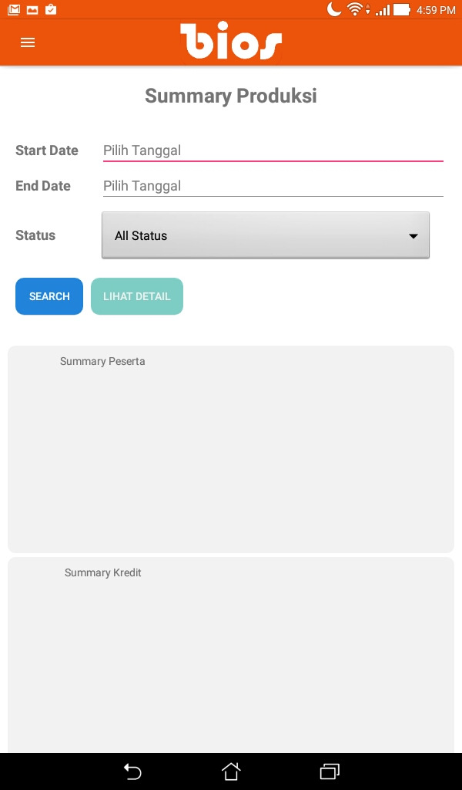
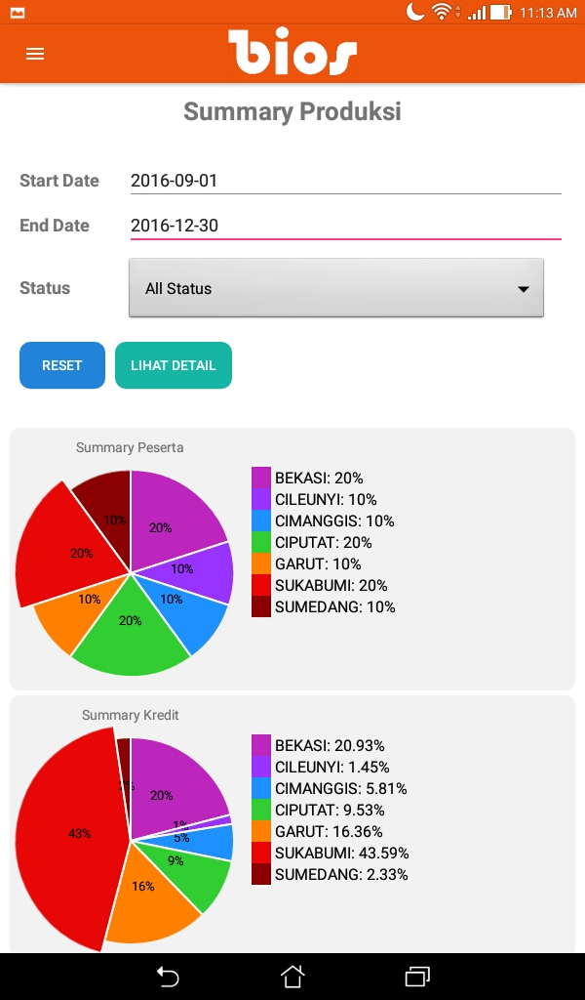
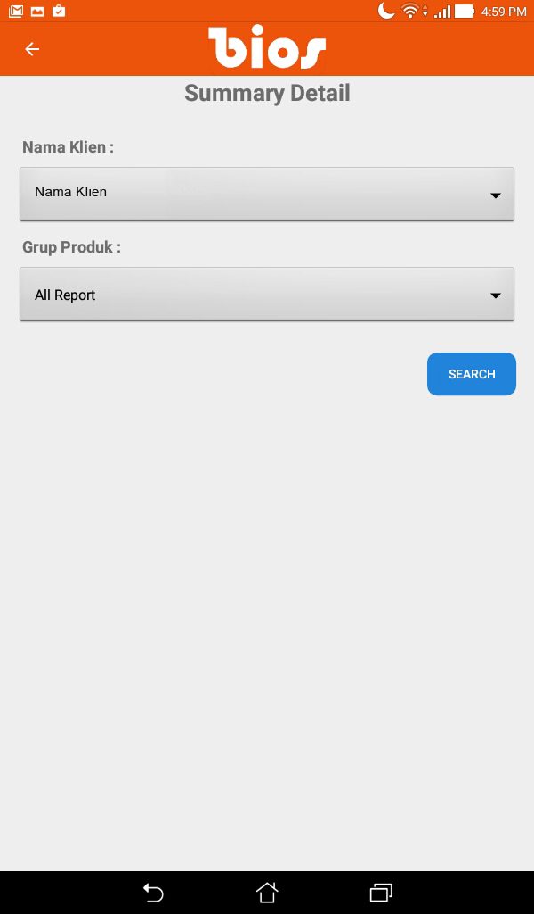
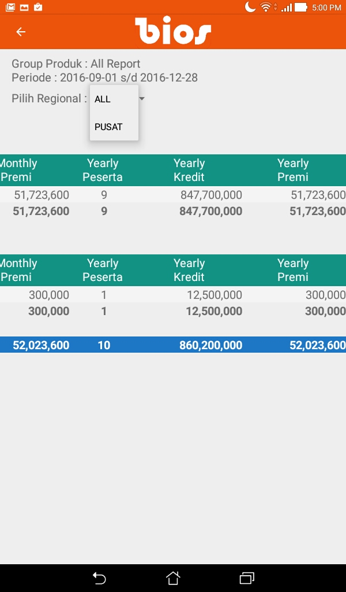

Summary Produksi
-
Pada daftar menu, pilih menu Summary Produksi

- Masukan data yang ingin ditampilkan, lalu tekan Search 
- Data ditampilkan berupa diagram Pie. Tekan tombol Lihat Detail untuk menampilkan dalam bentuk tabel 
- Sesuaikan filter untuk menampilkan data, lalu tekan Search 
-
Pada tampilan, geser layar untuk melihat keseluruhan data


- Untuk menampilkan data per-regional tekan Pilih Regional 
-
Data akan tampil berdasarkan regional yang dipilih